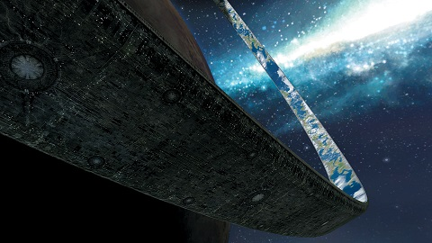
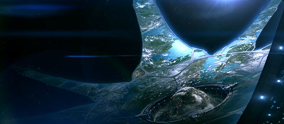
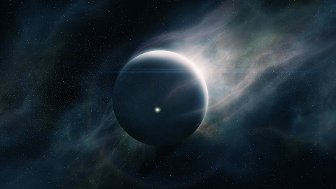

Locations
Halo -The result of a thousand failed plans of a disparate people, these mega ringworld superweapons were designed for one thing: the complete destruction of all lifeform that are eatable to the Flood parasite. While there are only seven Halos in the galaxy that makes up the entire array, once one is activated the other will follow suit covering every corner of known space. In the year 2552, human and Covenant forces discovered one of the seven rings, Installation 04, and waged war on its surface to gain control of it. During the battle, a Flood research facility was uncovered and containment was broken which led to the destruction of the ring. Months later, Installation 05 was discovered by both factions and was set to standby mode along with the other remaining five after the Covenant attempted to fire it as a massive Flood outbreak manage to escape the ring. While the Covenant and the Flood were both stopped by firing of the newly built Installation 08 during the battle of the Ark, the humans seek to locate and set research bases on the other rings in order to study and shutdown their weapon systems
The Ark - Located outside of the galaxy, out of range of the array's weapon range, this facility is the birthplace of Halo rings and acts as the command center for all seven rings within the array to be controlled from. This place marks as the site where the final battle of the Forerunner-Flood War and the Human-Covenant War took place. During Covenant's last stand, the Flood forces that escaped Installation 05 landed on the facility forcing the humans to active the incomplete Installation 08, the replacement for the destroyed Installation 04. The firing of the incomplete Installation 08 caused the ring to rip itself apart causing major damage to the Ark, nearly destroying it. The Ark's current status is unknown.

Requiem - During the Forerunners' war with the humans and the Flood, this shield world, artificial planets with a star and habitable interior layers designed to protect those inside them from the Halo array, served as my command center for all Forerunner military actions. Late into the Flood war, my wife, the Librarian, manage to imprison me in Requiem's core for my actions of turning humans and Forerunners into robots to stop the space zombies. 100,000 years pass and Requiem was discovered by the humans, reactivating its systems and delivering me my freedom from my prison. Requiem was destroy when it fell into its solar system's sun in the year 2558.